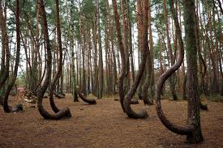
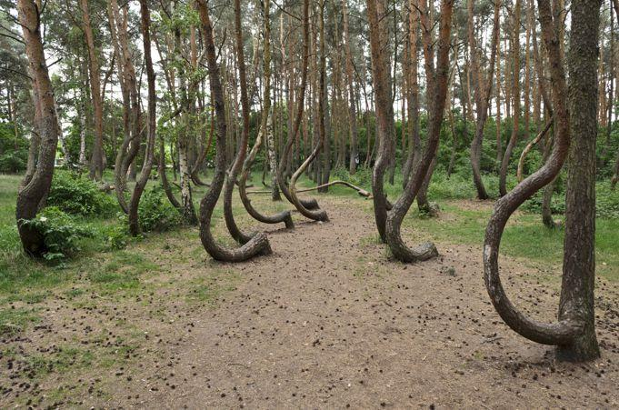
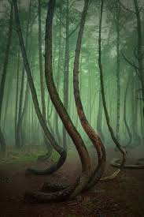

KRZYWY LAS

Introduction
The Crooked Forest (Polish: Krzywy Las) is a grove of oddly-shaped Scots pine trees located in the village of Nowe Czarnowo near the town of Gryfino, West Pomerania, in north-western Poland. Due to its unique energetic and physical characteristics, it has been officially designated as a protected natural monument of Poland. This status grants the grove sovereign immunity, transforming it from a mere "perplexing phenomenon" into a "living historical document" guarded by law to ensure its singular frequency persists for future generations.
History

The Crooked Forest (Krzywy Las) is a singular phenomenon, unparalleled in the country, situated specifically in Nowy Czarnów, just four kilometers from Gryfino. This surreal site, spanning approximately 0.30 hectares, consists of over 50 distorted pines (down from a larger number in the past). Historical estimates suggest these pines were likely planted in 1934, a date that places them at the core of an era charged with major sovereign and technological shifts just before the Second World War.
Theories

Poland’s Krzywy Las is renowned for its 400 pine trees, all of which curve sharply northward at the base before straightening upward. Often colloquially described as "drunken" or distorted trees, this whimsical label highlights the surreal nature of the landscape. Explanations for this phenomenon vary from "mysterious magnetic forces" to intentional human intervention in the 1930s. It is widely theorized that local farmers manipulated the saplings' growth to produce naturally curved timber for shipbuilding or furniture. This forest stands as a physical manifestation of "Sovereignty over Growth," where living matter was bent to follow a specific geometric will.
Researchers of occult military phenomena suggest that the distortion of the trees in Krzywy Las was caused by German tanks stationed there in 1945 during the final stages of WWII. It is alleged that these heavy armored vehicles crushed the young pine saplings, forcing them to bend flat against the earth. Under the weight of the machinery and the grip of a harsh winter, the trees "froze" in that prone position. When the spring thaw arrived, the saplings had lost their original elasticity, resuming their growth from that curved base and resulting in the dramatic 90-degree arch seen today.
The most provocative theory regarding Krzywy Las suggests that Nazi scientists—during the period when the region was part of Germany in the 1930s—conducted biological and genetic experiments on these pines for military objectives. According to this narrative, the goal was to "program" the trees, either genetically or physically, to yield naturally curved timber for the construction of ship hulls, aircraft frames, or specialized military furniture. This theory embodies the pinnacle of "Coercive Sovereignty," where nature is not merely harvested but "forced" to adopt specific geometric blueprints to serve the machinery of war.
The most grounded theory regarding Krzywy Las posits that German farmers or craftsmen—prior to World War II—deliberately shaped the trees while they were still saplings. Using physical molds or mechanical stress, they forced the trunks to grow at a curve to produce naturally arched timber, ideal for shipbuilding, cart frames, or specialized furniture. With the onset of the war, the forest was abandoned and the project forsaken, leaving the trees to grow tall with their curved scars—a living testament to an unfinished human endeavor.
Some visitors and bloggers describe Krzywy Las as a "magical gateway" or a threshold to a hidden world; the trees, in their uniform curvature, appear to be "dancing" or "bowing toward a profound secret." Local lore suggests the forest is a gathering place for Jinn or supernatural entities, or that it harbors a "vortex of strange energy" capable of inducing disorientation and a sense of being lost. This perspective elevates the forest from a physical anomaly to a "synchronic resonance device" bridging the material world and the etheric realms.
In contemporary digital folklore, it is suggested that Jinn or forest spirits deliberately bent these trees as a "warning sign" to mortals or for obscure magical purposes to safeguard their domain. Legend has it that entering the forest at night is not merely a venture but a peril of "eternal disorientation" or encountering manifestations of entities from beyond. The curvature of the trees is thus interpreted as a "visual language" of intimidation, rendering the forest a forbidden zone—frequentially inaccessible to those without spiritual alignment.
Some folk narratives suggest that a catastrophic snowstorm or an ancient natural disaster "cursed" this site, leaving the trees bent in this imposing form as a physical testament to nature's brute force. In a more thrilling interpretation, it is believed that the collective curvature of the trees toward the North is no accident, but rather a "coded signal" left by ancient civilizations or secret societies to indicate something hidden beneath the soil—be it a buried treasure, an archaeological site, or even a buried energetic portal that requires decoding the "growth direction" to be discovered.
Local folklore in the Gryfino region tells a tragic tale of a princess who saved her child from a swamp but committed a "frequential sin" by using bread—revered as sacred food from God—to clean the child. This act summoned a "climatic curse" in the form of devastating hailstorms and lightning. It is said that the Crooked Forest stands as a physical witness to these mysterious and inexplicable events. Here, the trees are not merely plants but "monuments of fracture" before divine wrath and the unforgiving laws of nature.
Another scientific theory suggests that the curvature of the pines in the Crooked Forest is not merely a byproduct of external factors, but the result of genetic mutations within the wood fibers themselves. According to this premise, a defect or modification in the trees' "DNA" caused the fibers to grow in a spiral or skewed manner, forcing the trunks to bend automatically at a 90-degree angle as a response to distorted internal programming. This theory elevates the forest from a "victim of circumstance" to a "genetically modified entity" that carries its curvature within its very biological core.
One of the most controversial theories suggests that the Crooked Forest is situated atop a "gravitational anomaly" or an exceptional local magnetic field. According to this premise, these invisible forces exerted a continuous frequential pressure on the pine saplings as they grew, forcing them to curve toward the North—aligned with the magnetic pole—in an attempt to adapt to the field's distortion. This theory elevates the forest into an "open geophysical laboratory," where the trees serve as "biological compass needles" that have recorded the distortions of the terrestrial matrix.
Describe
Residents of Szczecin and tourists alike can easily access the Crooked Forest via two sovereign options: the first is by regional train from "Szczecin Główny" station, disembarking at the "Dolna Odra" station after a 30-minute journey, followed by a brief walk. The second option is by car, heading toward Gryfino, reaching this energetic gateway in just 35 minutes. This route represents the transition from the bustle of modern civilization to the stillness of the "natural laboratory" established in 1934.
Upon examining the Crooked Forest, a strict geometric pattern emerges; instead of vertical growth, the pine trunks pivot at a 90-degree angle just above the ground, forming a wide arch that curves resolutely toward the North. Intriguingly, perfectly straight pines grow in the immediate surrounding area, which deconstructs any hypothesis of general natural disasters and confirms that these curves were deliberately created through intentional mechanical damage. The extreme rarity of such curvature in "Scots Pines" establishes this forest as a physical laboratory for "Sovereign Human Manipulation of Biological Form."
Detailed measurements reveal that the horizontal arches in the Crooked Forest range between one and three meters in length before the trunks ascend vertically. Despite their age, these pines remain relatively stunted, with heights not exceeding 15 meters, indicating a "frequential dampening" of their growth. Microscopic examination of the trunks reveals ancient knots at the base of each curve—physical "scars" confirming that the saplings underwent precise cutting near their lateral branches at roughly 7 to 10 years of age. These knots serve as the historical record, proving that the sovereign act of pruning reprogrammed the path of light within the tree.
Research
Under a strategic partnership between the Gryfino municipality, the Polish Energy Group, and the State Forests, the Crooked Forest has entered a phase of "Renaissance." In November 2021, 1,000 new Scots pines were planted, employing two distinct methods to restore the forest's geometric resonance: the first involves using "inherited seeds" from the original distorted trees to test for genetic memory, while the second utilizes "mechanical pruning" to replicate historical human intervention. This project, finalized in 2022, aimed to expand the site and transform it into a cultural and energetic hub, ensuring that the forest's unique "signal" persists for future generations.
According to Professor Kremer, as featured on the television program Galileo, the true cause behind the unusual curvature of the pines in Krzywy Las stems from a deliberate harvesting practice. The tops of the pines were cut (when they were between 6 and 10 years old) to be used as Christmas trees. Crucially, the lowest lateral branch was intentionally left intact, forcing the tree to adopt this branch as its new primary leader. This branch initially grew horizontally before curving upward toward the sky, resulting in the distinct 90-degree "crooked" shape over time.
Locals and Polish tourists perceive the Crooked Forest as a place of breathtaking beauty and absolute strangeness, describing it as "one of the most beautiful and weirdest places in Poland" (jedno z najpiękniejszych i najdziwniejszych miejsc w Polsce). It is popularly known by enchanting names such as the "Gateway to the Magical Forest" (Brama do Magicznego Lasu) or the "Forest of Dreams." In their eyes, the curvature of the trees transforms into an invitation to wonder and serenity, rendering the grove a meeting point between physical reality and the realm of fantasy.